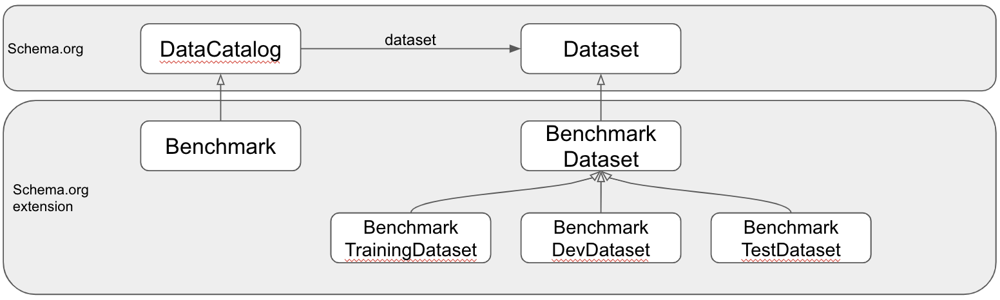
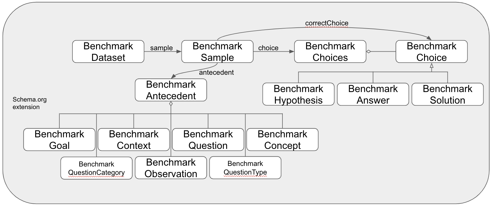

Commonsense Benchmark Ontology
Release 2020-06-22
- This version:
- http://purl.org/twc/mcs/0.1
- Latest version:
- http://purl.org/twc/mcs/
- Revision:
- 0.1
- Authors:
- Henrique O. Santos
- Download serialization:


- License:

- Visualization:

- Cite as:
- Henrique O. Santos. Commonsense Benchmark Ontology. Revision: 0.1. Retrieved from: http://purl.org/twc/mcs/0.1
Abstract
One goal in commonsense reasoning systems includes being able to answer common-sense reasoning questions. In order to compare systems, a number of benchmark question sets have arisen. Leaderboards have emerged to act as hubs for hosting benchmarks and supporting infrastructure that accepts submissions of commonsense reasoning systems that then get scored against the benchmarks. These benchmarks vary in structure. Some provide questions and answer choices, while others may provide factual observations and require reasoners to choose the most appropriate hypothesis to explain them. We provide an ontology that provides a common vocabulary that can be used to annotate datasets that compose commonsense reasoning benchmarks, as well as submissions, and systems. Our goal with this ontology is to allow diverse benchmarks to be compared, integrated, and also support the analysis of systems and machine-learning models. What is described below is our alpha version and we welcome comments.Introduction back to ToC
We have analyzed the following commonsense benchmarks:- CycIC
- CommonsenseQA
- PhysicalIQA
- SocialIQA
- HellaSwag
- AlphaNLI
Ontology objectives
This ontology was developed with the following immediate objectives:- Enable benchmark datasets to be discoverable and interpretable
- Support conversion of benchmarks and systems' outputs to a common format
- Allow the comparison, contrast, and integration of bechmarks and system's outputs
- Representation of benchmarks, including elements from the bechmarks listed above
- Representation of submissions from the AI2 leaderboard
- Model paths
- Model groundings
- Continue to review and adapt the ontology to match additional benchmarks
Namespace declarations
| mcs | <http://purl.org/twc/mcs/> |
| schema | <http://schema.org> |
| owl | <http://www.w3.org/2002/07/owl> |
| rdf | <http://www.w3.org/1999/02/22-rdf-syntax-ns> |
| xsd | <http://www.w3.org/2001/XMLSchema> |
| rdfs | <http://www.w3.org/2000/01/rdf-schema> |
| vann | <http://purl.org/vocab/vann> |
| default namespace | <http://purl.org/twc/mcs> |
Commonsense Benchmark Ontology: Overview back to ToC
This ontology has the following classes and properties.Classes
- Benchmark
- BenchmarkAnswer
- BenchmarkAntecedent
- BenchmarkChoice
- BenchmarkChoices
- BenchmarkConcept
- BenchmarkContext
- BenchmarkDataset
- BenchmarkDevDataset
- BenchmarkGoal
- BenchmarkHypothesis
- BenchmarkObservation
- BenchmarkQuestion
- BenchmarkQuestionCategory
- BenchmarkQuestionType
- BenchmarkSample
- BenchmarkSolution
- BenchmarkTestDataset
- BenchmarkTrainingDataset
- DevScore
- Submission
- SubmissionSample
- TestScore
Object Properties
MCS Ontology: Description back to ToC
 Example 1: A Benchmark in JSON-LD
{
"@context": "http://schema.org/",
"@id": "SocialIQA",
"@type": "Benchmark",
"name": "SocialIQA",
"abstract": "We introduce Social IQa: Social Interaction QA, a new question-answering benchmark
for testing social commonsense intelligence. Contrary to many prior benchmarks that focus on
physical or taxonomic knowledge, Social IQa focuses on reasoning about people’s actions and
their social implications. For example, given an action like \"Jesse saw a concert\" and a
question like \"Why did Jesse do this?\", humans can easily infer that Jesse wanted \"to see
their favorite performer\" or \"to enjoy the music\", and not \"to see what's happening inside\"
or \"to see if it works\". The actions in Social IQa span a wide variety of social situations,
and answer candidates contain both human-curated answers and adversarially-filtered machine-generated
candidates. Social IQa contains over 37,000 QA pairs for evaluating models’ abilities to reason
about the social implications of everyday events and situations.",
"author": [
{
"@type": "Person",
"name": "Maarten Sap"
},
{
"@type": "Person",
"name": "Hannah Rashkin"
},
{
"@type": "Person",
"name": "Derek Chen"
},
{
"@type": "Person",
"name": "Ronan Le Bras"
},
{
"@type": "Person",
"name": "Yejin Choi"
}
],
"dataset": [
{
"@id": "SocialIQA/train",
"@type": "BenchmarkTrainingDataset",
"name": "SocialIQA training dataset"
},
{
"@id": "SocialIQA/dev",
"@type": "BenchmarkDevDataset",
"name": "SocialIQA dev dataset"
}
]
}
Example 2: A Benchmark sample in JSON-LD
{
"@context": "http://schema.org/",
"@id": "SocialIQA-[line_number]",
"@type": "BenchmarkSample",
"includedInDataset": "SocialIQA/train",
"antecedent": {
"@type": "BenchmarkSampleAntecedent",
"numberOfItems": 2,
"itemListElement": [
{
"@type": "BenchmarkContext",
"name": "Context",
"text": "Aubrey offered tribute to the gods. They did this out of reverence.",
"position": 0
},
{
"@type": "BenchmarkQuestion",
"name": "Question",
"text": "How would Others feel as a result?",
"position": 1
}
]
},
"choice": {
"@type": "BenchmarkChoices",
"numberOfItems": 3,
"itemListElement": [
{
"@type": "BenchmarkAnswer",
"text": "they were diffierent",
"position": 1
},
{
"@type": "BenchmarkAnswer",
"text": "religious and spiritual",
"position": 2
},
{
"@type": "BenchmarkAnswer",
"text": "they were unique",
"position": 3
}
]
},
"correctChoice": 3
}
Example 3: A Submission in JSON-LD
{
"@context": "http://schema.org/",
"@id": "brg0m7uqaup1kchu59g0",
"@type": "Submission",
"name": "cycic-roberta4",
"description": "This is the RobertaForMultipleChoice model provided by huggingface that was used to evaluate and refine the CycIC dataset. It was trained for 4 epochs with a learning rate of 5e-05. https://github.com/cycorp/cycic-transformers",
"dateCreated": "06-09-2020T18:20:15Z",
"isBasedOn": "CycIC",
"contributor": {
"@type": "Person",
"name": "Sam Teeter from Cycorp"
},
"contentRating": [
{
"@type": "TestScore",
"name": "Test Score",
"value": "0.7676"
},
{
"@type": "DevScore",
"name": "Dev Score",
"value": "0.7711"
}
],
"resultOf": {
"@type": "SoftwareApplication",
"startTime": "06-09-2020T18:22:53Z",
"endTime": "06-09-2020T19:17:11Z",
"url": "https://github.com/cycorp/cycic-transformers"
}
}
Example 4: A Submission sample (prediction) in JSON-LD
{
"@context": "http://schema.org/",
"@type": "SubmissionSample",
"@id": "CycIC-324917-submission",
"includedInDataset": "brg0m7uqaup1kchu59g0",
"value": 2,
"about": "CycIC-324917"
}
Cross reference for Commonsense Benchmark Ontology classes, properties and dataproperties back to ToC
This section provides details for each class and property defined by Commonsense Benchmark Ontology.Classes
- Benchmark
- BenchmarkAnswer
- BenchmarkAntecedent
- BenchmarkChoice
- BenchmarkChoices
- BenchmarkConcept
- BenchmarkContext
- BenchmarkDataset
- BenchmarkDevDataset
- BenchmarkGoal
- BenchmarkHypothesis
- BenchmarkObservation
- BenchmarkQuestion
- BenchmarkQuestionCategory
- BenchmarkQuestionType
- BenchmarkSample
- BenchmarkSolution
- BenchmarkTestDataset
- BenchmarkTrainingDataset
- DevScore
- Submission
- SubmissionSample
- TestScore
Benchmarkc back to ToC or Class ToC
IRI: http://purl.org/twc/mcs/Benchmark
- has super-classes
- data catalog c
BenchmarkAnswerc back to ToC or Class ToC
IRI: http://purl.org/twc/mcs/BenchmarkAnswer
- has super-classes
- BenchmarkChoice c
BenchmarkAntecedentc back to ToC or Class ToC
IRI: http://purl.org/twc/mcs/BenchmarkAntecedent
- has super-classes
- item list c
- is in range of
- antecedent op
BenchmarkChoicec back to ToC or Class ToC
IRI: http://purl.org/twc/mcs/BenchmarkChoice
- has super-classes
- list item c
- has sub-classes
- BenchmarkAnswer c, BenchmarkHypothesis c, BenchmarkSolution c
BenchmarkChoicesc back to ToC or Class ToC
IRI: http://purl.org/twc/mcs/BenchmarkChoices
- has super-classes
- item list c
- is in range of
- choices op
BenchmarkConceptc back to ToC or Class ToC
IRI: http://purl.org/twc/mcs/BenchmarkConcept
- has super-classes
- list item c
BenchmarkContextc back to ToC or Class ToC
IRI: http://purl.org/twc/mcs/BenchmarkContext
- has super-classes
- list item c
BenchmarkDatasetc back to ToC or Class ToC
IRI: http://purl.org/twc/mcs/BenchmarkDataset
- has super-classes
- dataset c
- has sub-classes
- BenchmarkDevDataset c, BenchmarkTestDataset c, BenchmarkTrainingDataset c
- is in domain of
- sample op
BenchmarkDevDatasetc back to ToC or Class ToC
IRI: http://purl.org/twc/mcs/BenchmarkDevDataset
- has super-classes
- BenchmarkDataset c
BenchmarkGoalc back to ToC or Class ToC
IRI: http://purl.org/twc/mcs/BenchmarkGoal
- has super-classes
- list item c
BenchmarkHypothesisc back to ToC or Class ToC
IRI: http://purl.org/twc/mcs/BenchmarkHypothesis
- has super-classes
- BenchmarkChoice c
BenchmarkObservationc back to ToC or Class ToC
IRI: http://purl.org/twc/mcs/BenchmarkObservation
- has super-classes
- list item c
BenchmarkQuestionc back to ToC or Class ToC
IRI: http://purl.org/twc/mcs/BenchmarkQuestion
- has super-classes
- list item c
BenchmarkQuestionCategoryc back to ToC or Class ToC
IRI: http://purl.org/twc/mcs/BenchmarkQuestionCategory
- has super-classes
- list item c
BenchmarkQuestionTypec back to ToC or Class ToC
IRI: http://purl.org/twc/mcs/BenchmarkQuestionType
- has super-classes
- list item c
BenchmarkSamplec back to ToC or Class ToC
IRI: http://purl.org/twc/mcs/BenchmarkSample
- has super-classes
- creative work c
- is in domain of
- antecedent op, choices op
- is in range of
- sample op
BenchmarkSolutionc back to ToC or Class ToC
IRI: http://purl.org/twc/mcs/BenchmarkSolution
- has super-classes
- BenchmarkChoice c
BenchmarkTestDatasetc back to ToC or Class ToC
IRI: http://purl.org/twc/mcs/BenchmarkTestDataset
- has super-classes
- BenchmarkDataset c
BenchmarkTrainingDatasetc back to ToC or Class ToC
IRI: http://purl.org/twc/mcs/BenchmarkTrainingDataset
- has super-classes
- BenchmarkDataset c
DevScorec back to ToC or Class ToC
IRI: http://purl.org/twc/mcs/DevScore
- has super-classes
- rating c
Submissionc back to ToC or Class ToC
IRI: http://purl.org/twc/mcs/Submission
- has super-classes
- dataset c
Object Properties
antecedentop back to ToC or Object Property ToC
IRI: http://purl.org/twc/mcs/antecedent
- has super-properties
- has part op
- has domain
- BenchmarkSample c
- has range
- BenchmarkAntecedent c
choicesop back to ToC or Object Property ToC
IRI: http://purl.org/twc/mcs/choices
- has super-properties
- has part op
- has domain
- BenchmarkSample c
- has range
- BenchmarkChoices c
resultOfop back to ToC or Object Property ToC
IRI: http://purl.org/twc/mcs/resultOf
- has domain
- thing c
- has range
- action c
- is inverse of
- result op
sampleop back to ToC or Object Property ToC
IRI: http://purl.org/twc/mcs/sample
- has super-properties
- has part op
- has domain
- BenchmarkDataset c
- has range
- BenchmarkSample c
Legend back to ToC
op: Object Properties
dp: Data Properties
ni: Named Individuals
References back to ToC
Add your references here. It is recommended to have them as a list.Acknowledgements back to ToC
The authors would like to thank Silvio Peroni for developing LODE, a Live OWL Documentation Environment, which is used for representing the Cross Referencing Section of this document and Daniel Garijo for developing Widoco, the program used to create the template used in this documentation.